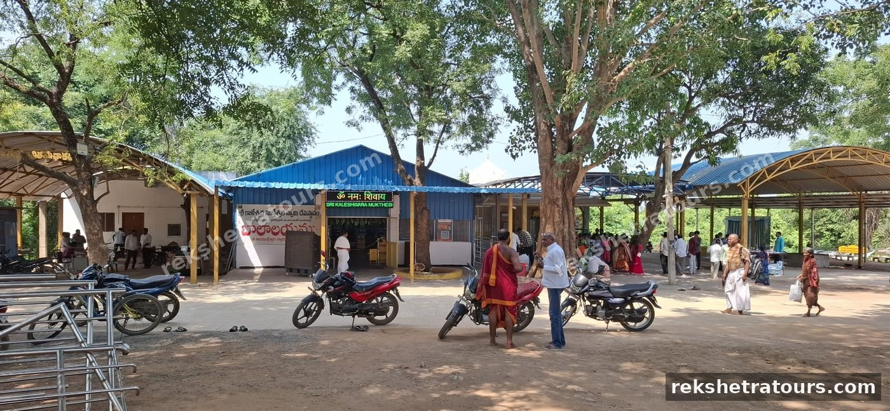
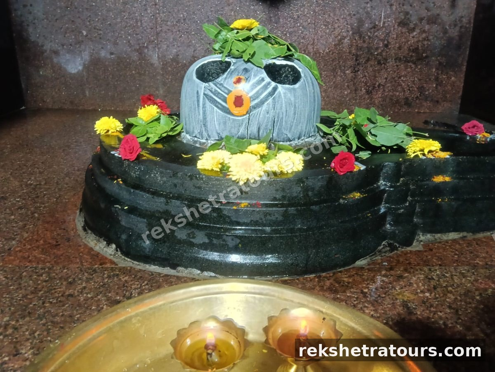
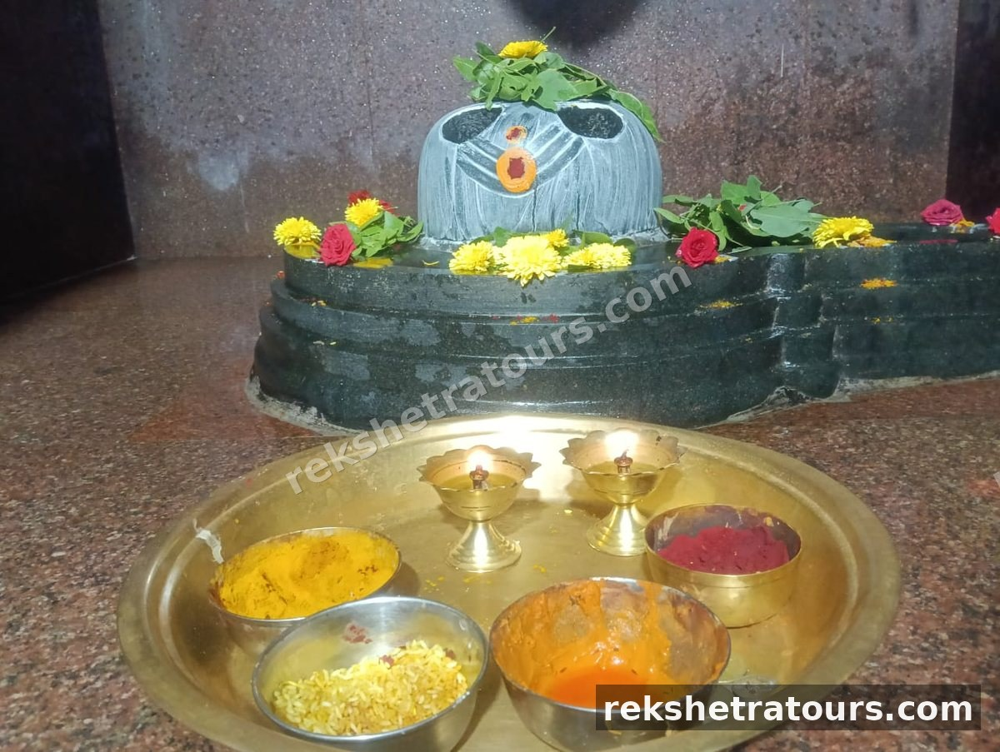

పరిచయం
కాళేశ్వరం క్షేత్ర సముదాయంలో ఆది ముక్తేశ్వరుడు అనే పేరుతో వెలసిన శివలింగం మరో ప్రాచీన దర్శనీయ స్థలం. 'ఆది' అంటే మూలం, తొలి అని అర్థం కాబట్టి, ముక్తేశ్వర తత్వానికి మూలరూపంగా ఈ లింగాన్ని భక్తులు కొలుస్తారు. ఇది ప్రధాన ముక్తేశ్వర లింగానికి పూర్వరూపంగా స్థల పురాణాలలో ప్రస్తావించబడింది.
ఆధ్యాత్మిక ప్రాముఖ్యత
ఆది ముక్తేశ్వరుని దర్శనం మోక్ష సాధనకు తొలి మెట్టుగా భక్తులు భావిస్తారు. కాలానుగుణంగా ఈ క్షేత్రం ప్రధాన ఆలయంతో పాటు అభివృద్ధి చెందుతూ వచ్చింది. నదీ తీర ప్రాంతానికి సమీపంలో ఉండటం వల్ల, స్నాన, దర్శన కార్యక్రమాలు కలిపి నిర్వహించుకోవడం యాత్రికులకు సౌకర్యంగా ఉంటుంది.
ఫోటోలు & వీడియో



పరిక్రమణలో స్థానం మరియు దర్శన విధానం
పరిక్రమణ క్రమంలో ప్రధాన ఆలయ దర్శనం తరువాత భక్తులు ఆది ముక్తేశ్వరుని దర్శించి, తదుపరి కుబేర సంగమం వైపు ప్రయాణిస్తారు. ఈ క్షేత్రం పరిక్రమణ మార్గంలో ఒక ముఖ్యమైన ఆధ్యాత్మిక విరామ స్థలంగా ఉపయోగపడుతుంది.
యాత్రికులకు సూచనలు
చిన్న ఆలయమైనందున ప్రశాంతంగా దర్శనం లభిస్తుంది. సమీపంలో నీడ, విశ్రాంతి సదుపాయాలు పరిమితంగా ఉండవచ్చు కాబట్టి యాత్రికులు తగినంత మంచినీరు వెంట ఉంచుకోవడం మంచిది.